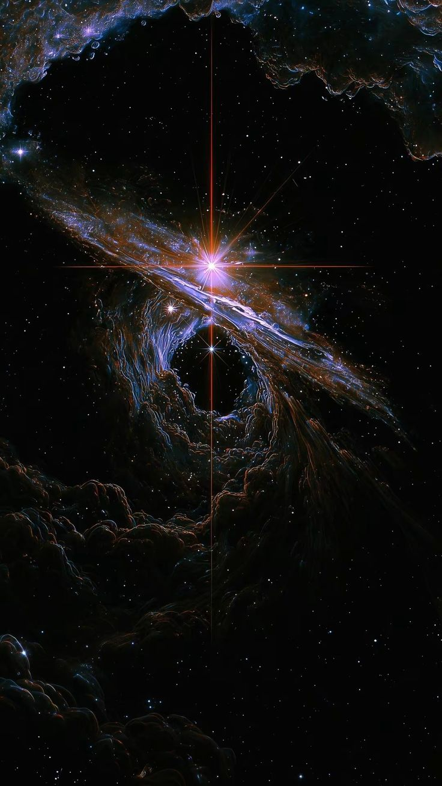
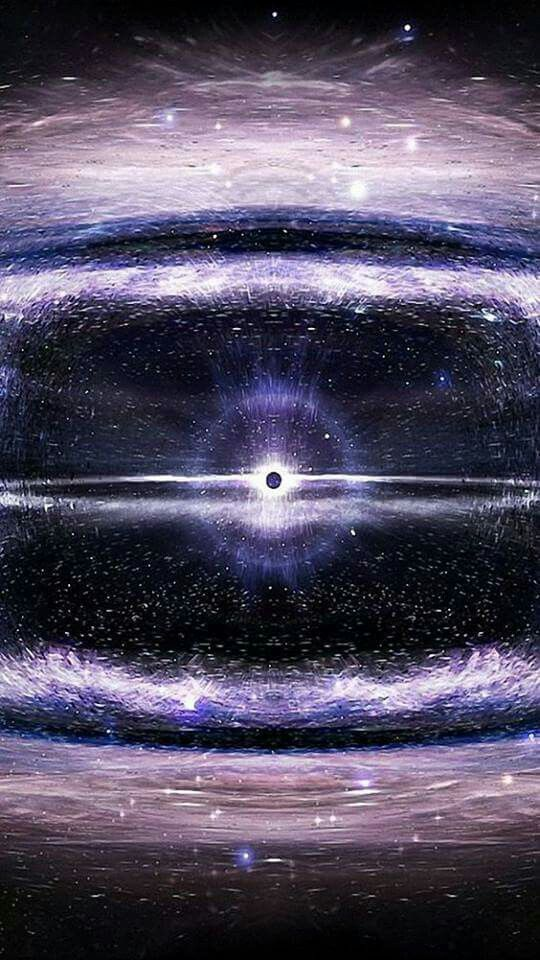

“El universo es un bosque oscuro donde todos guardan silencio para no atraer depredadores pero nosotros hemos estado gritando.” - Liu Cixin.
El universo es uno de los grandes misterios de la humanidad, conciderado sin fin ni principio. ¿Qué es? ¿Por qué estamos aquí? ¿Estamos atrapados en él?
¿Por qué es importante conocer el tema?
Es importante siquiera preguntarnos sobre él, nos genera miedo e incertidumbre el saber que somos pequeñas masas en un espacio infinito, sin un propósito claro, existiendo como una simple molécula del infinito espacio. El espacio no tiene suficiente explicación ni suficientes respuestas. Nos genera duda estar en un espacio interminable.
El bosque oscuro
El bosque oscuro es una de las teorías más abrumadoras de la comunidad científica, dicha por Liu Cixin, la cual cuestiona nuestras acciones en el universo.
Esta afirma que el universo es como un bosque oscuro, donde hay civilizaciones que no hacen ruido para que los depredadores no las escuchen y nosotros los seres humanos hemos estado mandando señales al universo. Durante años hemos gritado.
El origen del universo
La creación del universo es un debate muy hablado, ya que nadie sabe con total exactitud cómo se originó, pero la más aceptada es el llamado Big Bang.

Esta propone que al principio de todos los tiempos, había un estado originario de altísima densidad y temperatura concentrado en un punto mínimo.
A partir de una gran explosión, la materia comenzó a desplazarse, lo que dio lugar a la formación de partículas elementales, átomos, estrellas, galaxias y finalmente el universo.
Pero la pregunta o la duda es: ¿qué había realmente antes de eso? ¿Un espacio oscuro y vacío? ¿Y cuál fue la causa del Big Bang?